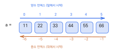
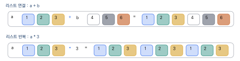
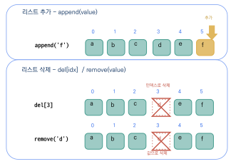
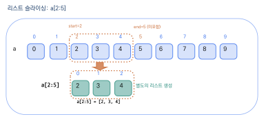

리스트와 슬라이싱
이 장을 마치면
- 리스트를 생성하고 인덱싱으로 요소에 접근할 수 있다.
- 리스트 메소드(
append,remove,sort등)로 항목을 추가·삭제·정렬할 수 있다. - 슬라이싱
[start:end:step]으로 부분 리스트를 얻을 수 있다. - 리스트를 반복문으로 순회하며 데이터를 처리할 수 있다.
=대입과 슬라이싱 복사(a[:])의 차이를 이해할 수 있다.
지금까지 우리는 변수 하나에 값 하나를 저장하는 방식으로 프로그래밍을 해 왔다. 학생 한 명의 점수는 score = 87로 충분하지만, 30명의 점수를 다루려면 변수 30개를 일일이 선언해야 하는 불편함이 생긴다. 현실 세계의 데이터는 대부분 "여러 개의 값으로 이루어진 묶음" 형태이다 — 쇼핑 목록, 학생 명단, 주간 기온 기록 등이 모두 그러하다.
리스트(list)는 이러한 문제를 해결하는 파이썬의 대표적인 자료구조이다. 리스트를 사용하면 여러 개의 값을 하나의 변수에 순서대로 저장하고, 인덱스를 통해 원하는 값에 빠르게 접근할 수 있다. 마치 사물함에 번호가 붙어 있어 원하는 칸의 물건을 바로 꺼낼 수 있는 것과 같다.
이 장에서는 먼저 리스트의 필요성과 생성 방법을 이해한 뒤, 인덱싱을 통해 개별 원소에 접근하는 방법을 배운다. 이어서 리스트의 다양한 연산과 내장함수를 익히고, 반복문과 결합하여 리스트를 순회하고 조작하는 방법을 실습한다. 마지막으로 리스트의 일부분을 한꺼번에 추출하는 강력한 기능인 슬라이싱(slicing)까지 학습한다. 리스트는 파이썬 프로그래밍에서 가장 빈번하게 사용되는 자료형이므로, 이 장의 내용을 탄탄하게 익혀 두면 이후의 학습이 훨씬 수월해질 것이다.
5.1 리스트의 생성과 인덱싱
리스트의 필요성
7명의 학생 점수를 저장한다고 하자. 개별 변수를 사용하면 다음과 같이 7개의 변수를 일일이 선언해야 한다.
score0 = 87
score1 = 84
score2 = 95
score3 = 67
score4 = 88
score5 = 94
score6 = 637명일 때도 번거로운데, 만약 학생 수가 1,000명으로 늘어나면 변수를 1,000개 선언해야 한다. 게다가 이 변수들은 메모리의 서로 다른 위치에 흩어져 저장되므로 "전체 점수의 합계를 구하라"거나 "최고 점수를 찾아라" 같은 작업을 수행하기가 매우 불편하다.
리스트list를 사용하면 이 문제를 깔끔하게 해결할 수 있다. 리스트는 여러 값을 하나의 변수에 순서대로 묶어서 저장하는 자료구조이다. 사물함을 떠올리면 이해가 쉽다 — 사물함에는 0번 칸, 1번 칸, 2번 칸,... 이렇게 번호가 붙어 있어서, 번호만 알면 원하는 칸의 물건을 바로 꺼낼 수 있다. 리스트도 마찬가지로 각 값에 번호(인덱스)가 부여되어 있어 빠른 접근이 가능하다.
리스트 생성
리스트는 대괄호 [ ] 안에 값들을 쉼표로 구분하여 생성한다. 리스트 내에서 쉼표로 구분된 각각의 자료 값을 요소element 또는 항목item이라고 부른다.
score_list = [87, 84, 95, 67, 88, 94, 63]
print(score_list)
fruits = ['banana', 'apple', 'orange', 'kiwi']
print(fruits)
mixed = [100, 200, 'apple', 400] # 서로 다른 자료형 저장 가능
print(mixed)[87, 84, 95, 67, 88, 94, 63] ['banana', 'apple', 'orange', 'kiwi'] [100, 200, 'apple', 400]
위 코드에서 score_list는 정수 7개를 저장하는 리스트이고, fruits는 문자열 4개를 저장하는 리스트이다. 특히 mixed 리스트처럼 정수와 문자열 등 서로 다른 자료형의 값을 하나의 리스트에 함께 저장할 수도 있다. 이것은 C나 Java의 배열(array)에서는 허용되지 않는 파이썬만의 유연한 특성이다.
리스트는 대괄호로 직접 만드는 것 외에도 여러 가지 방법으로 생성할 수 있다.
list1 = list() # 빈 리스트
list2 = [] # 빈 리스트
list3 = list(range(1, 10)) # [1, 2,..., 9]
list4 = list('ABCDEF') # ['A', 'B', 'C', 'D', 'E', 'F']빈 리스트는 list() 또는 []로 만들 수 있다. list(range(1, 10))은 range() 함수가 생성하는 1부터 9까지의 수열을 리스트로 변환한 것이고, list('ABCDEF')는 문자열의 각 문자를 개별 원소로 분리하여 리스트를 만든 것이다.
인덱싱
리스트의 각 항목에는 0부터 시작하는 인덱스index가 부여된다. 항목의 개수가 \(n\)개인 리스트의 인덱스는 0부터 시작해서 \(n-1\)까지의 정수를 사용한다. 인덱스를 이용하여 원하는 항목 값에 접근하는 것을 인덱싱indexing이라 한다.
a = [11, 22, 33, 44, 55, 66]
print(a[0]) # 첫 번째 요소
print(a[3]) # 네 번째 요소
print(a[5]) # 여섯 번째(마지막) 요소
print(len(a)) # 리스트의 길이11 44 66 6

그림 5.1은 리스트 a의 원소와 인덱스의 관계를 시각적으로 보여 준다. 각 칸에 값이 저장되어 있고, 칸 위에 인덱스 번호가 표시되어 있다. 양수 인덱스는 앞에서부터, 음수 인덱스는 뒤에서부터 센다.
음수 인덱스
파이썬은 다른 언어에서는 잘 지원하지 않는 음수 인덱스를 제공한다. 음수 인덱스는 리스트의 끝에서부터 역방향으로 세는 방식이다. -1은 마지막 원소, -2는 뒤에서 두 번째 원소를 가리킨다.
a = [11, 22, 33, 44, 55, 66]
print(a[-1]) # 마지막 요소: 66
print(a[-2]) # 뒤에서 두 번째 요소: 55
print(a[-6]) # 첫 번째 요소: 1166 55 11
음수 인덱스가 유용한 대표적인 상황은 리스트의 마지막 원소에 접근할 때이다. a[-1]은 리스트의 길이를 모르더라도 항상 마지막 원소를 반환하므로, a[len(a)-1]보다 훨씬 간결하고 읽기 쉽다. 이 점은 초보자도 바로 활용할 수 있는 파이썬의 편리한 특성이다.
여기서 한 가지 주의해야 할 차이점이 있다. 양수 인덱스는 첫 번째 원소를 0으로 시작하지만, 음수 인덱스는 마지막 원소를 -1로 시작한다. 즉, 0에 대응되는 음수 인덱스인 -0이 따로 존재하는 것이 아니라(-0은 0과 같으므로 첫 번째 원소를 가리킨다), 양수 쪽은 0부터, 음수 쪽은 -1부터 카운트가 시작된다는 점을 기억해야 한다. 길이가 \(n\)인 리스트에서 양수 인덱스는 0 \(\sim\) \(n-1\), 음수 인덱스는 \(-n\) \(\sim\) -1의 범위를 가진다.
인덱스 값이 리스트의 범위를 초과하면 IndexError: list index out of range 오류가 발생한다.
6개의 항목을 가진 리스트의 양수 인덱스 범위는 0부터 5까지이고, 음수 인덱스 범위는 \(-6\)부터 \(-1\)까지이다. 초보자가 가장 흔히 저지르는 실수는 길이가 \(n\)인 리스트에서 인덱스 \(n\)에 접근하려는 것이다. 인덱스는 0부터 시작하므로 마지막 인덱스는 \(n-1\)이라는 점을 항상 기억하자.
리스트는 대괄호 [ ]로 생성하며, 여러 자료형의 값을 함께 저장할 수 있다. 인덱스는 0부터 시작하고, 음수 인덱스를 사용하면 뒤에서부터 접근할 수 있다. len() 함수로 리스트의 길이를 구할 수 있으며, 인덱스가 범위를 초과하면 IndexError가 발생한다.
5.2 리스트의 연산과 내장함수
리스트는 단순히 데이터를 저장하는 그릇에 그치지 않는다. 파이썬은 리스트를 대상으로 다양한 연산과 내장함수를 제공하여, 데이터를 효율적으로 처리할 수 있게 해 준다. 이번 절에서는 리스트의 기본 연산, 멤버 확인 연산자, 그리고 자주 사용하는 내장함수를 차례로 살펴본다.
리스트 연산
리스트는 덧셈(+)과 반복(*) 연산을 지원한다. 숫자에서의 덧셈, 곱셈과 의미는 다르지만 직관적으로 이해할 수 있다. 덧셈 연산자 +는 두 리스트를 연결(concatenation)하여 하나의 새로운 리스트를 만든다. 반복 연산자 *는 리스트의 원소를 지정한 횟수만큼 반복하여 새 리스트를 생성한다.
a = [1, 2, 3]
b = [4, 5, 6]
print(a + b) # 리스트 연결
print(a * 3) # 리스트 반복[1, 2, 3, 4, 5, 6] [1, 2, 3, 1, 2, 3, 1, 2, 3]
a + b는 리스트 a의 원소 뒤에 리스트 b의 원소를 이어 붙인 새 리스트를 반환한다. 원본 리스트 a와 b는 변하지 않는다. a * 3은 a의 원소를 3번 반복한 새 리스트를 만든다.

그림 5.2은 리스트의 연결(+)과 반복(*) 연산이 어떻게 동작하는지를 보여 준다. + 연산은 두 리스트를 나란히 이어 붙이고, * 연산은 원본 리스트를 지정된 횟수만큼 반복한다. 이 연산들은 문자열의 +(연결)와 *(반복)와 동일한 패턴이므로, 문자열을 이미 배운 학습자라면 자연스럽게 이해할 수 있을 것이다.
멤버 연산자: in, not in
프로그래밍에서 "이 값이 리스트에 들어 있는가?"를 확인하는 것은 매우 흔한 작업이다. 파이썬은 이를 위해 in과 not in이라는 멤버 연산자를 제공한다. in 연산자는 값이 리스트에 포함되어 있으면 True를, 포함되어 있지 않으면 False를 반환한다. not in은 그 반대이다.
a_list = [10, 20, 30, 40]
print(10 in a_list) # True
print(50 in a_list) # False
print(50 not in a_list) # TrueTrue False True
멤버 연산자가 특히 유용한 상황은 리스트에서 원소를 삭제할 때이다. 앞으로 배울 remove() 메소드는 리스트에 존재하지 않는 값을 삭제하려 하면 ValueError를 발생시킨다. 따라서 삭제 전에 in 연산자로 존재 여부를 먼저 확인하면 오류를 예방할 수 있다. 이처럼 코딩할 때 "발생 가능한 문제를 미리 생각하고 안전한 방식으로 코딩하는 습관"은 매우 중요하다.
n_list = [11, 22, 33, 44, 55, 66]
if 55 in n_list: # 55가 있으면 삭제
n_list.remove(55)
if 88 in n_list: # 88은 없으므로 실행되지 않음
n_list.remove(88)
print(n_list)[11, 22, 33, 44, 66]
위 코드에서 55는 리스트에 존재하므로 삭제되었지만, 88은 존재하지 않으므로 if 조건이 False가 되어 remove()가 실행되지 않았다. 이로써 오류 없이 안전하게 삭제 작업이 수행되었다.
리스트에 적용되는 내장함수
파이썬에서 리스트와 함께 가장 자주 사용되는 내장함수로는 min(), max(), sum(), len(), sorted()가 있다. 이 함수들의 이름은 각각의 기능을 직관적으로 나타내므로, 한 번 익혀 두면 코드를 읽을 때도 바로 의미를 파악할 수 있다.
nums = [20, 10, 40, 50, 30]
print('Min:', min(nums))
print('Max:', max(nums))
print('Sum:', sum(nums))
print('Length:', len(nums))
print('Sorted:', sorted(nums))Min: 10 Max: 50 Sum: 150 Length: 5 Sorted: [10, 20, 30, 40, 50]
min()은 리스트에서 가장 작은 값을, max()는 가장 큰 값을, sum()은 모든 원소의 합계를 반환한다. len()은 원소의 개수를 알려 주며, sorted()는 정렬된 새로운 리스트를 반환한다(원본은 변하지 않는다).
이 함수들은 문자열 리스트에도 동작한다. 문자열의 경우 사전(알파벳) 순서로 비교가 이루어진다. 영어는 알파벳 순서, 한글은 가나다 순서를 따른다. 다만, sum() 함수는 문자열에는 적용되지 않는다.
fruits = ['banana', 'orange', 'apple', 'kiwi']
print(min(fruits)) # 사전 순으로 가장 앞: apple
print(max(fruits)) # 사전 순으로 가장 뒤: orangeapple orange
이 내장함수들을 조합하면 평균을 구하는 것도 간단해진다. 예를 들어 sum(nums) / len(nums)로 리스트 원소의 평균값을 한 줄에 계산할 수 있다. 직접 반복문을 작성하여 합계를 구하는 것보다 훨씬 간결하고 읽기 쉬우므로, 이러한 내장함수의 존재를 알고 적극 활용하는 것이 중요하다. 파이썬 내장함수의 전체 목록과 사용법은 파이썬 표준 라이브러리 문서에서 확인할 수 있다.
리스트의 + 연산은 두 리스트를 연결하고, * 연산은 리스트를 반복한다. in과 not in 연산자로 특정 값의 포함 여부를 확인할 수 있으며, 이를 활용하면 안전한 삭제가 가능하다. min(), max(), sum(), len(), sorted()는 리스트를 다룰 때 필수적인 내장함수이다.
5.3 리스트와 반복문
리스트에 저장된 데이터를 하나씩 꺼내어 처리하는 것은 프로그래밍에서 매우 빈번한 작업이다. 예를 들어 학생 점수 리스트에서 합계를 구하거나, 상품 목록에서 각 상품의 이름을 출력하는 일이 그렇다. 3장에서 배운 for 반복문과 리스트를 결합하면 이러한 작업을 간결하고 효율적으로 수행할 수 있다.
for문으로 리스트 순회
for 문을 사용하면 리스트의 원소를 하나씩 꺼내어 반복 처리할 수 있다. 이때 반복 변수에 리스트의 각 원소가 순서대로 대입된다.
fruits = ['apple', 'banana', 'cherry', 'date']
for fruit in fruits:
print(fruit)apple banana cherry date
위 코드에서 for fruit in fruits:는 "fruits 리스트에서 원소를 하나씩 꺼내어 fruit 변수에 넣고, 아래 코드를 반복 실행하라"는 의미이다. 첫 번째 반복에서 fruit은 'apple'이 되고, 두 번째 반복에서는 'banana'가 되는 식으로, 마지막 원소 'date'까지 반복이 계속된다. 이 패턴을 활용하면 리스트의 합계와 평균을 구하는 프로그램도 쉽게 작성할 수 있다.
scores = [87, 84, 95, 67, 88]
total = 0
for score in scores:
total += score
average = total / len(scores)
print(f'Sum: {total}, Average: {average:.1f}')Sum: 421, Average: 84.2
물론 sum(scores)를 사용하면 합계를 더 간단하게 구할 수 있지만, 위 예제처럼 반복문으로 직접 합계를 계산하는 과정을 이해하는 것이 중요하다. 반복문의 동작 원리를 알아야 단순 합계 외에 "조건에 맞는 원소만 합산" 같은 응용도 가능해지기 때문이다.
enumerate() 활용
반복문에서 원소의 값뿐 아니라 해당 원소의 인덱스(위치 번호)도 함께 필요한 경우가 있다. 예를 들어 "1번째 학생: 87점, 2번째 학생: 84점"과 같이 번호를 매겨 출력하고 싶을 때이다. 이때 enumerate() 함수를 사용하면 인덱스와 값을 동시에 얻을 수 있다.
nations = ['Korea', 'China', 'India', 'Nepal']
for i, nation in enumerate(nations):
print(f'No.{i}: {nation}')No.0: Korea No.1: China No.2: India No.3: Nepal
enumerate(nations)는 각 원소에 대해 (인덱스, 값) 형태의 쌍을 차례로 생성한다. 반복 변수를 i, nation처럼 두 개로 지정하면 인덱스는 i에, 값은 nation에 대입된다. enumerate()를 사용하지 않고 별도의 카운터 변수를 만들어 관리하는 것보다 훨씬 간결하고 파이썬다운(Pythonic) 코드이다. 파이썬다운 코드 작성법에 대해서는 Luciano Ramalho의 『Fluent Python』에서 깊이 있게 다루고 있다.
리스트에 요소 추가/삭제
리스트는 생성 후에도 원소를 자유롭게 추가하거나 삭제할 수 있는 가변(mutable) 자료형이다. 이 특성 덕분에 프로그램 실행 중에 데이터를 동적으로 관리할 수 있다. 원소를 추가하고 삭제하는 세 가지 주요 방법을 알아보자.

그림 5.3은 리스트에 원소를 추가하고 삭제하는 세 가지 방법을 시각적으로 보여 준다. 초록색은 추가되는 원소, 빨간색은 삭제되는 원소를 나타낸다.
1) append() — 끝에 추가
append() 메소드는 리스트의 맨 끝에 새로운 원소를 추가한다. "append"는 "덧붙이다"라는 뜻이므로, 이름에서 기능을 유추할 수 있다.
a_list = ['a', 'b', 'c', 'd', 'e']
a_list.append('f')
print(a_list)['a', 'b', 'c', 'd', 'e', 'f']
2) del — 인덱스로 삭제
del 키워드는 파이썬의 명령어로, 리스트에서 지정한 인덱스 위치의 항목을 삭제한다. 삭제 후에는 뒤에 있던 원소들이 앞으로 당겨진다.
n_list = [11, 22, 33, 44, 55, 66]
del n_list[3] # 네 번째 항목(44) 삭제
print(n_list)[11, 22, 33, 55, 66]
3) remove() — 값으로 삭제
remove() 메소드는 인덱스가 아닌 값을 지정하여 삭제한다. 해당 값을 가진 원소가 여러 개이면 가장 먼저 나타나는 하나만 삭제된다.
n_list = [11, 22, 33, 44, 55, 66]
n_list.remove(44)
print(n_list)[11, 22, 33, 55, 66]
remove()는 리스트에 존재하지 않는 값을 삭제하려 하면 ValueError가 발생한다.
삭제 전에 in 연산자로 존재 여부를 확인하는 것이 안전하다. 예를 들어 if 88 in n_list: n_list.remove(88)처럼 사용하면 오류를 예방할 수 있다.
마지막으로, 리스트와 반복문, 그리고 input() 함수를 결합하면 사용자 입력을 수집하여 동적으로 리스트를 구성하는 실용적인 프로그램을 만들 수 있다.
names = [] # 빈 리스트 생성
for i in range(3):
name = input(f'Name {i+1}: ')
names.append(name)
print('Entered names:', names)Name 1: Alice Name 2: Bob Name 3: Charlie Entered names: ['Alice', 'Bob', 'Charlie']
위 프로그램은 빈 리스트 names를 만든 뒤, 반복문 안에서 input()으로 이름을 입력받고, append()로 리스트에 추가하는 과정을 3번 반복한다. 이 패턴은 "사용자로부터 여러 개의 데이터를 수집하는" 상황에서 매우 자주 사용되므로 잘 기억해 두자.
리스트를 다른 변수에 할당할 때 b = a와 같이 하면 리스트가 복사되는 것이 아니라, 같은 리스트를 가리키는 또 다른 참조가 만들어진다. 따라서 b를 통해 리스트를 수정하면 a에서도 변경된 내용이 보인다. 진정한 복사본을 만들려면 b = a.copy() 또는 b = a[:]와 같이 해야 한다.
>>> a = [1, 2, 3] >>> b = a # b는 같은 리스트를 가리키는 참조 >>> b.append(4) >>> print(a) [1, 2, 3, 4] >>> c = a.copy() # c는 진정한 복사본 >>> c.append(5) >>> print(a) [1, 2, 3, 4]
for 문으로 리스트의 원소를 하나씩 순회할 수 있으며, enumerate()를 사용하면 인덱스와 값을 동시에 얻을 수 있다. append()는 리스트 끝에 원소를 추가하고, del은 인덱스로 삭제하며, remove()는 값으로 삭제한다. 빈 리스트를 만든 뒤 반복문에서 append()로 원소를 추가하는 패턴은 동적 데이터 수집에 널리 사용된다.
5.4 리스트 메소드와 슬라이싱
앞 절에서 append(), remove() 같은 리스트 메소드 몇 가지를 이미 사용해 보았다. 이번 절에서는 리스트가 제공하는 더 다양한 메소드를 체계적으로 정리하고, 리스트의 강력한 기능 중 하나인 슬라이싱(slicing)을 배운다. 슬라이싱은 리스트에서 여러 원소를 한꺼번에 추출하는 기능으로, 데이터 처리에서 매우 빈번하게 사용된다.
주요 리스트 메소드
리스트 클래스는 데이터를 조작하기 위한 다양한 메소드를 제공한다. 메소드는 "리스트변수.메소드이름()" 형태로 호출하며, 각 메소드의 역할을 다음 표에 정리하였다.
| 메소드 | 설명 |
|---|---|
append(x) | 리스트 끝에 원소 x를 추가한다. |
insert(i, x) | 인덱스 i 위치에 x를 삽입한다. |
remove(x) | 값이 x인 첫 번째 원소를 삭제한다. |
pop(i) | 인덱스 i의 원소를 삭제하고 반환한다. 생략 시 마지막 원소. |
sort() | 리스트를 오름차순으로 정렬한다. reverse=True이면 내림차순. |
reverse() | 리스트의 순서를 뒤집는다. |
index(x) | 값 x의 인덱스를 반환한다. |
count(x) | 값 x의 개수를 반환한다. |
extend(리스트) | 다른 리스트의 원소들을 개별적으로 추가한다. |
정렬 메소드 sort()는 리스트의 활용에서 가장 많이 사용되는 메소드 중 하나이다. 기본적으로 오름차순 정렬을 수행하며, reverse=True 인자를 전달하면 내림차순으로 정렬한다. 주의할 점은 sort()는 원본 리스트 자체를 변경하며, 새 리스트를 반환하지 않는다는 것이다. 원본을 유지하면서 정렬된 새 리스트가 필요하면 내장함수 sorted()를 사용해야 한다.
list1 = [20, 10, 40, 50, 30]
list1.sort() # 오름차순 정렬
print('Ascending:', list1)
list1.sort(reverse=True) # 내림차순 정렬
print('Descending:', list1)
list1.reverse() # 순서 뒤집기
print('Reversed:', list1)Ascending: [10, 20, 30, 40, 50] Descending: [50, 40, 30, 20, 10] Reversed: [10, 20, 30, 40, 50]
index() 메소드는 특정 값이 리스트의 어디에 위치하는지 찾아 준다. 값이 존재하지 않으면 ValueError가 발생하므로, 안전하게 사용하려면 먼저 in 연산자로 존재 여부를 확인하는 것이 좋다.
a_list = ['a', 'b', 'c', 'd', 'e']
print(a_list.index('c')) # 2
print(a_list.count('a')) # 1
a_list.insert(1, 'x') # 인덱스 1 위치에 'x' 삽입
print(a_list)2 1 ['a', 'x', 'b', 'c', 'd', 'e']
초보자가 자주 혼동하는 부분이 append()와 extend()의 차이이다. append()는 인자를 하나의 원소로 추가하지만, extend()는 인자의 개별 원소를 하나씩 추가한다. 예를 들어 리스트에 [4, 5]를 추가할 때, append([4, 5])는 리스트 안에 리스트가 들어간 [1, 2, 3, [4, 5]]를 만들지만, extend([4, 5])는 원소를 개별적으로 추가한 [1, 2, 3, 4, 5]를 만든다.
a = [1, 2, 3] a.append([4, 5]) # [1, 2, 3, [4, 5]] -- 리스트가 하나의 원소로 추가됨 b = [1, 2, 3] b.extend([4, 5]) # [1, 2, 3, 4, 5] -- 개별 원소로 추가됨
슬라이싱
인덱싱이 리스트에서 하나의 원소를 꺼내는 것이라면, 슬라이싱slicing은 리스트에서 여러 원소를 한꺼번에 추출하는 것이다. 빵을 한 덩이리로 가져오는 것이 인덱싱이라면, 빵을 얇게 썰어서(slice) 여러 조각을 가져오는 것이 슬라이싱이다.
슬라이싱의 문법은 리스트[start:end:step]이며, start부터 end-1까지의 원소를 step 간격으로 가져온다. 여기서 end 인덱스의 원소는 포함되지 않는다는 점이 중요하다.
a = [0, 1, 2, 3, 4, 5, 6, 7, 8, 9]
print(a[2:5]) # 인덱스 2부터 4까지
print(a[:4]) # 처음부터 인덱스 3까지
print(a[6:]) # 인덱스 6부터 끝까지
print(a[::2]) # 2칸 간격으로 추출
print(a[::-1]) # 역순으로 추출[2, 3, 4] [0, 1, 2, 3] [6, 7, 8, 9] [0, 2, 4, 6, 8] [9, 8, 7, 6, 5, 4, 3, 2, 1, 0]

a[2:5]의 동작
그림 5.4은 슬라이싱 a[2:5]의 범위를 시각적으로 보여 준다. 인덱스 2부터 4까지(5는 제외)의 원소가 추출되는 과정을 확인하자. start 인덱스(2)는 포함하고 end 인덱스(5)는 미포함한다.
슬라이싱의 핵심 규칙을 정리하면 다음과 같다.
| 패턴 | 의미 |
|---|---|
a[start:end] | start부터 end-1까지 |
a[:end] | 처음부터 end-1까지 |
a[start:] | start부터 끝까지 |
a[::step] | 전체에서 step 간격으로 |
a[::-1] | 전체를 역순으로 |
슬라이싱에서 초보자가 자주 실수하는 점은 end 인덱스가 결과에 포함되지 않는다는 것이다. 예를 들어 a[2:5]는 인덱스 2, 3, 4의 원소만 가져오고, 인덱스 5의 원소는 포함되지 않는다. 이 규칙이 처음에는 어색하게 느껴질 수 있지만, a[:3]이 "처음부터 3개"를, a[3:6]이 "3번부터 3개"를 의미하는 등 "개수를 쉽게 계산할 수 있다"는 장점이 있어 익숙해지면 매우 편리하다.
리스트 메소드 중 sort()는 원본을 정렬하고, append()와 extend()는 추가 방식이 다르다. 슬라이싱 [start:end:step]으로 리스트의 부분을 추출할 수 있으며, end 인덱스의 원소는 포함되지 않는다. step이 음수이면 역순으로 추출한다.
- 5명의 학생 점수를 리스트에 저장하고,
max(),min(),sum(),len()을 활용하여 최고점·최저점·합계·평균을 출력하시오.scores = [85, 90, 78, 92, 88] print('Max :', max(scores)) print('Min :', min(scores)) print('Sum :', sum(scores)) print('Avg :', sum(scores) / len(scores)) - 리스트
a = [1, 2, 3]과b = [4, 5, 6]을+로 합치고,sorted()로 내림차순 정렬하여 출력하시오.a = [1, 2, 3] b = [4, 5, 6] c = sorted(a + b, reverse=True) print(c) # [6, 5, 4, 3, 2, 1] - 리스트
nums = [10, 25, 7, 42, 19, 33]에서 짝수만 추출하여 새로운 리스트로 만들어 출력하시오. (for 문 + if 문 활용)nums = [10, 25, 7, 42, 19, 33] evens = [] for n in nums: if n % 2 == 0: evens.append(n) print(evens) # [10, 42] - 리스트
colors = ['red', 'green', 'blue', 'yellow']를 역순으로 출력하시오. (슬라이싱[::-1]또는reverse()활용)colors = ['red', 'green', 'blue', 'yellow'] print(colors[::-1]) # 슬라이싱 이용 print(list(reversed(colors))) # reversed() 함수 이용 - 리스트의 모든 원소 평균을 구하는 함수
list_avg(lst)를 작성하시오. 빈 리스트가 전달되면 0을 반환하도록 한다.def list_avg(lst): if len(lst) == 0: return 0 return sum(lst) / len(lst) print(list_avg([1, 2, 3, 4, 5])) # 3.0 print(list_avg([])) # 0 enumerate()를 사용하여 리스트fruits = ['apple', 'banana', 'cherry', 'kiwi']의 인덱스와 값을 함께 출력하시오. 출력 형식은0: apple처럼 인덱스 뒤에 콜론을 두고 값을 표시한다.fruits = ['apple', 'banana', 'cherry', 'kiwi'] for i, name in enumerate(fruits): print(f'{i}: {name}')- 리스트
nums = [10, 20, 30, 40, 50, 60, 70, 80]에 대하여 슬라이싱을 활용해 다음 세 가지를 출력하시오: (1) 처음 세 원소, (2) 마지막 세 원소, (3) 짝수 번째 인덱스에 있는 원소.nums = [10, 20, 30, 40, 50, 60, 70, 80] print(nums[:3]) # [10, 20, 30] print(nums[-3:]) # [60, 70, 80] print(nums[::2]) # [10, 30, 50, 70] - 빈 리스트로 시작하여 다음 작업을 차례대로 수행하고, 각 단계마다 리스트의 상태를 출력하시오: (1) 30, 50, 70을 차례로
append로 추가, (2) 인덱스 1 위치에 40을insert로 삽입, (3) 마지막 원소를pop으로 제거, (4) 값 30을remove로 삭제.items = [] items.append(30); items.append(50); items.append(70) print(items) # [30, 50, 70] items.insert(1, 40) print(items) # [30, 40, 50, 70] items.pop() print(items) # [30, 40, 50] items.remove(30) print(items) # [40, 50]
- 리스트는 대괄호
[ ]로 생성하며, 여러 자료형의 값을 하나의 변수에 순서대로 저장할 수 있는 가변(mutable) 자료형이다. 빈 리스트는[]로 생성한다. - 리스트의 인덱스는 0부터 시작하며, 음수 인덱스(
-1,-2, ...)로 뒤에서부터 접근할 수 있다. 범위를 벗어난 인덱스를 사용하면IndexError가 발생한다. - 리스트는
+(연결)와*(반복) 연산을 지원하며,in/not in멤버 연산자로 특정 값이 리스트에 포함되어 있는지 확인할 수 있다. min(),max(),sum(),len(),sorted()등의 내장함수를 리스트에 활용할 수 있다.sorted()는 원본을 변경하지 않고 정렬된 새 리스트를 반환한다.for문으로 리스트의 원소를 하나씩 순회할 수 있으며,enumerate()를 사용하면 인덱스와 값을 동시에 얻을 수 있다.enumerate()는 파이썬다운 코드 작성의 핵심이다.append()는 리스트 끝에 원소를 추가하고,insert()는 지정 위치에 삽입한다.del은 인덱스로 삭제하고,remove()는 값으로 삭제하며,pop()은 마지막 원소를 제거하면서 반환한다.sort()는 리스트를 정렬하고(reverse=True로 내림차순),reverse()는 순서를 뒤집는다.index()는 값의 위치를,count()는 값의 등장 횟수를 반환한다.- 슬라이싱
[start:end:step]으로 리스트나 문자열의 부분을 추출할 수 있다. 시작 인덱스는 포함하고 끝 인덱스는 포함하지 않는다. 간격이 음수이면 역방향으로 추출한다. - 빈 리스트를 만든 뒤 반복문에서
append()로 원소를 추가하는 패턴은 사용자 입력을 수집하거나 조건에 맞는 데이터를 모을 때 자주 사용되는 기본 패턴이다. - 리스트는 중첩이 가능하여 2차원 리스트(
[[1, 2], [3, 4]])를 만들 수 있으며, 이를 통해 행렬이나 표 형태의 데이터를 표현할 수 있다.
- ★★ 1부터 10까지의 숫자 중 홀수만 원소로 가지는
odd_list를 생성하고, 이 리스트의 합계와 평균을 출력하시오. (sum(),len()내장함수 사용)Odd list: [1, 3, 5, 7, 9] Sum: 25, Average: 5.0
- ★★ 다음 리스트가 주어졌을 때, 슬라이싱을 사용하여 각 결과를 출력하시오.
data = [10, 20, 30, 40, 50, 60, 70, 80, 90, 100]
- 인덱스 2부터 6까지의 원소
- 짝수 인덱스(0, 2, 4, ...)의 원소만
- 리스트를 역순으로
- ★★ 5명의 학생 점수를 리스트로 입력받아 최고 점수, 최저 점수, 평균 점수를 출력하는 프로그램을 작성하시오.
(
for문과append()사용)Student 1 score: 85 Student 2 score: 92 Student 3 score: 78 Student 4 score: 95 Student 5 score: 88 Highest: 95, Lowest: 78, Average: 87.6
- ★★ 문자열
'Programming'에 슬라이싱을 적용하여 다음 결과를 출력하시오.'Pro''gram''gnimmargorP'(역순)
- ★ 리스트
[3, 1, 4, 1, 5, 9, 2, 6]에서sort()메소드를 사용하여 오름차순, 내림차순으로 정렬한 결과를 각각 출력하시오. 또한 원소1이 몇 개인지count()메소드로 확인하시오. - ★★★ 다음 코드의 출력 결과를 쓰시오.
a = [1, 2, 3, 4, 5] b = a[1:4] b[0] = 99 print(a) print(b)
- ★★ 빈 리스트
nums를 만들고,for문과append()를 사용하여 1부터 20까지의 정수 중 짝수만 리스트에 추가하시오. 완성된 리스트와 리스트의 합계를 출력하시오. - ★★ 리스트
fruits = ['apple', 'banana', 'cherry', 'date', 'elderberry']에 대해enumerate()를 사용하여 다음과 같이 출력하시오.1. apple 2. banana 3. cherry 4. date 5. elderberry
- ★ 두 개의 리스트
a = [10, 20, 30]과b = [40, 50]에 대해 다음 연산의 결과를 쓰시오.a + ba * 230 in alen(a + b)